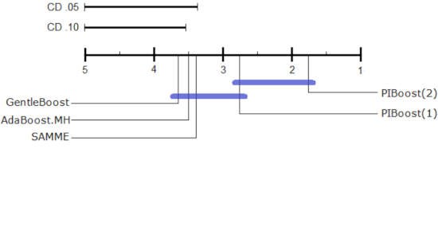
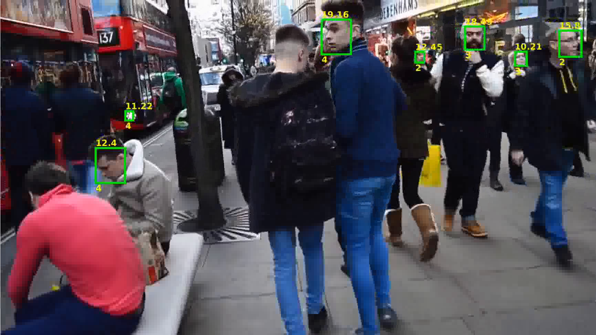

Machine Learning
|

Multi-class boosting with asymmetric binary weak-learners. We introduce a multi-class generalization of AdaBoost with binary weak-learners. We use a vectorial codification to represent class labels and a multi-class exponential loss function to evaluate classifier responses. This representation produces a set of margin values that provide a range of punishments for failures and rewards for successes. Moreover, the stage-wise optimization of this model introduces an asymmetric boosting procedure whose costs depend on the number of classes separated by each weak-learner. In this way the boosting procedure takes into account class imbalances when building the ensemble. The experiments performed compare this new approach favorably to AdaBoost.MH, GentleBoost and the SAMME algorithms. Related Publications: PR'2014 |
|

Multiclass cost-sensitive boosting: BAdaCost. We introduce a cost-sensitive multi-class Boosting algorithm (BAdaCost) based on a generalization of the Boosting margin, termed multi-class cost-sensitive margin. It can be used, for example, to address the class imbalance by the introduction of a cost matrix that weighs more hevily the costs of confused classes. Other important use is the development of object detectors in video, as the problem is heavily asymmetric and the costs can help a lot in this problem. Related Publications: IBPRIA'2015 PR'2018 |